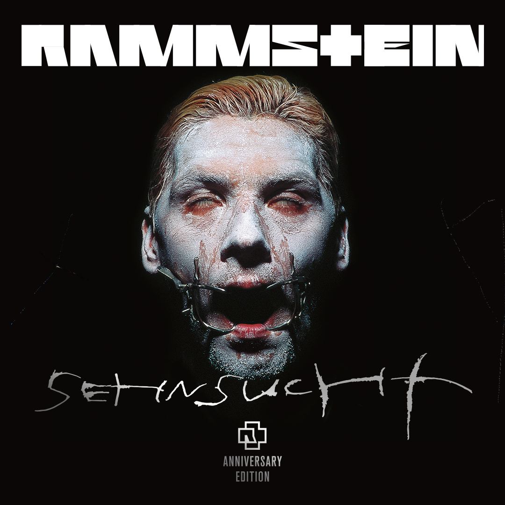

DU HAST [OFFICIAL VIDEO - 4K VERSION]
"Du hast", Rammstein's most viewed video to this day, can now be watched as a remastered 4k version! The video from 1997 was directed by Philipp Stölzl, and shot in Berlin and Brandenburg. As part of the remastered "Sehnsucht Anniversary Edition", the single "Du hast" is re-released as an exclusive white 7" vinyl on May 17, featuring the new "Spiel mit mir (2023 Mix)" as its B-side. Pre-order here!
SEHNSUCHT ANNIVERSARY EDITION
¡El legendario álbum de estudio de Rammstein publicado en 1997, con los sencillos "Du hast" y "Engel", reaparece el 9 de junio de 2023 como "Sehnsucht Anniversary Edition" remasterizada! La limitada "Sehnsucht Anniversary Edition" aparecerá como CD, LP doble (vinilo blanco o negro), casete, así como en formato digital, inclusive una versión remezclada de la canción "Spiel mit mir". El sofisticado envoltorio fue rediseñado por el diseñador de artwork originario Dirk Rudolph. El CD y vinilo aparecen en un estuche de tapa dura plateado estampado y un folleto de 40 páginas inclusive fotos inéditas de la banda de Gottfried Helnwein.
"ADIEU" SINGLE Y VIDEO
¡Hoy aparece Adieu, el nuevo sencillo del álbum de Rammstein Zeit! De la dirección del vídeo musical Adieu se ha hecho cargo una vez más Specter Berlin, con quien Rammstein ya cooperó para el vídeo de Deutschland. Adieu se grabó en mayo de 2022 en París, poco antes de que la banda partiera para su Gira Europea de Estadios 2022. Adieu se publica como CD de 3 pistas y en vinilo de 10" y ¡ya puede encargarse!
GIRA EUROPEA DE ESTADIOS 2023
¡Rammstein se complace en anunciar que la Gira Europea de Estadios entrará en una nueva ronda en verano de 2023! Las entradas están disponibles aquí.
When darkness overspreads my eyes
and, as I lie close to the earth, a thousand unknown plants are noticed by me: when I hear the buzz of the little world among the stalks, and grow familiar with the countless indescribable forms of the insects and flies, then I feel the presence of the Almighty, who formed us in his own image, and the breath of that universal love which bears and sustains us, as it floats around us in an eternity of bliss; and then, my friend, when darkness overspreads my eyes, and heaven and earth seem to dwell in my soul and absorb its power, like the form of a beloved mistress, then I often think with longing, Oh, would I could describe these conceptions, could impress upon paper all that is living so full and warm within me, that it might be the mirror of my soul, as my soul is the mirror of the infinite God!